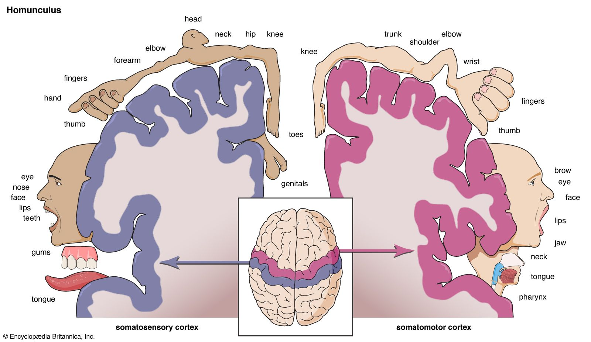

Click any body region on the map above — or any colored strip on the cortex — to see the contralateral mapping. The homunculus is the most important map in clinical neurology. A stroke anywhere along this strip produces a predictable deficit on the opposite side of the body.